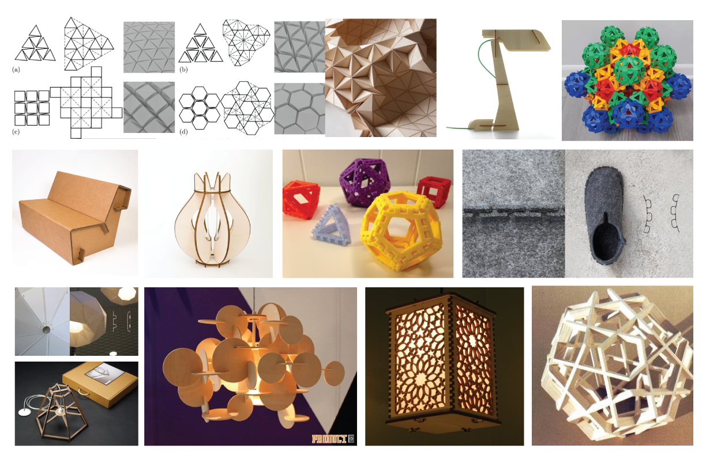

Paper Lamp
Mood Boards
Design Mood Board

Mechanical Mood Board
Design Explorations


Digital Prototyping


Exploring different pattern possibilities (stars, sparkles, and circles - respectively) to create a starry pattern.
Circles were chosen in order to provide simplicity in aesthetics and let the light shining through create the starry effect.
Prototyping
Testing Prototype


A prototype was made to test the side of the icosahedron and the connector design. Through this prototyping, a number of items were determined:
- That a higher power and slower speed were needed to cut the material. (Determined through further testing.)
- The fastners need to be resized to line up correctly.
- What the perfect size was for the gap for each fastener.
- That the fastener length should be decreased to make it easier to assemble the lamp and so the connecters wouldn't bend.
- That the circle for the lamp was the perfect tolerance.
Prototype #1

A prototype was then made from the final material, however once the file was imported into the Lasercut software, some of the star cuts were lost, resulting in not as 'dotty' as a design as desired.
Prototype #2
Another prototpye was then made, wih special care to make sure the file was brought in loseless. The smaller stars that weren't easy to pop through with a finger were popped through with an exacto.
Below is the final result!
Final Product